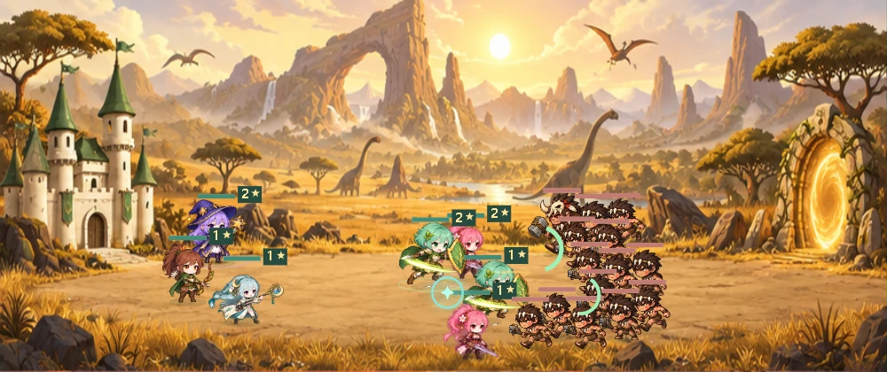

Browser capture
Browser captureAtlas
Culture, folklore and campus exploration. Mobile reading and illustrative 3D scenes.
PERSONAL PORTFOLIO
Selected software, AI tools and game projects.
Browser captureCulture, folklore and campus exploration. Mobile reading and illustrative 3D scenes.
A cross-platform notebook. Handwriting, editor interactions and an embedded companion.
 Gameplay capture
Gameplay captureAn Unreal Engine survival prototype. Combat, reloads and facility interactions.

Gameplay recordingFive-hero selection, card recruitment, star upgrades and real-time defense. A 30-second browser recording with screenshots of the working prototype.
 Architecture overview
Architecture overviewBeyond chat: inference, memory, video and tools.
A development workbench spanning local models, encrypted memory retrieval, MCP tools, image-to-video generation and media processing, with asset checks, approved test tasks and resource safeguards.
 Offline form validation
Offline form validationConnecting information workflows and browser actions.
Organizes public job information and tests browser forms, attachment preparation and human review. The demo uses an offline test page and example data, stopping before submission.
 Browser capture
Browser captureCoherent layouts, controls and feedback.
Frontend work on responsive layout, bilingual navigation and component states. Full-frame interface captures show the original visual design; public descriptions avoid internal project names.
 Recorded game build
Recorded game buildConnecting character movement with environment presentation.
Tests character movement, environment layers and state transitions in a local engine prototype, using full-frame runtime footage.
 UI design concept
UI design conceptDemonstrating implementation without publishing the full design.
Runtime screenshots and visual concepts show interaction, visualization and interface work; descriptions omit internal names and full mechanics.
Capability modules built around local AI workflows, described at their verified scope.
Locally verified
Local-model conversation and tool calling, with a verified long-context configuration and direct-output mode. Model adapters are separated from application tools.
Generation module tested
Image input, local model inference and MP4 export have produced real output. Motion consistency and visual quality require review; one-click generation through the main agent remains in integration.
Retrieval module tested
Full-text indexes over archived project materials and conversations support source tracing. Retrieval is blocked while the encrypted vault is locked; full-text search is not presented as semantic memory.
Core toolchain verified
Connects models to custom memory, asset-checking and approved-task tools, with real invocation and result records for the core toolchain.
The portfolio pairs visual demonstrations with specific local verification. These are development acceptance results, not commercial launch metrics.
A 32K-context local-model configuration was verified, with actual model → custom tool → result interactions recorded.
Explore the workflowA core Python regression ran 71 tests: 70 passed and 1 skipped. Cooperative GPU locking separately passed 14 of 14 tests.
Explore validationNative tablet simulator, offline browser forms and local game builds are shown in recordings—not represented as commercial releases.
Watch the demosPython / TypeScript / Node.js / SQLite · MCP / Skills · Playwright · iPadOS simulator · Godot / Unreal
Original scene captures, models and interface studies.
Across personal projects I handle requirements, architecture and interaction decisions, module integration, tool connections, failure analysis and acceptance review. AI-assisted implementation is credited accurately rather than presented as entirely hand-written code.
Explore the engineering demos ↗Mathematical modeling and social statistics inform how I approach engineering: define the question, choose the method and examine the result. These studies connect dynamical systems with longitudinal survey analysis.
I hold a BSc in Information and Computing Science from the University of Science and Technology Beijing and have studied Social Research Methods and Statistics at the University of Manchester, including longitudinal UKHLS research. My engineering practice spans local AI agents, software tooling and cross-platform interaction.
Personal projects combine custom modules, licensed resources and AI-assisted development. Public cases use generic names while full-frame imagery illustrates engineering and interaction. Original project files remain private.
Find more on GitHub ↗